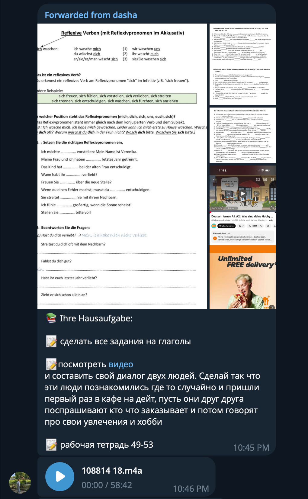
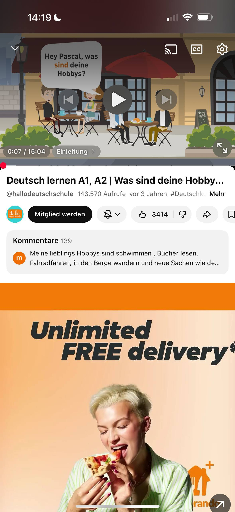
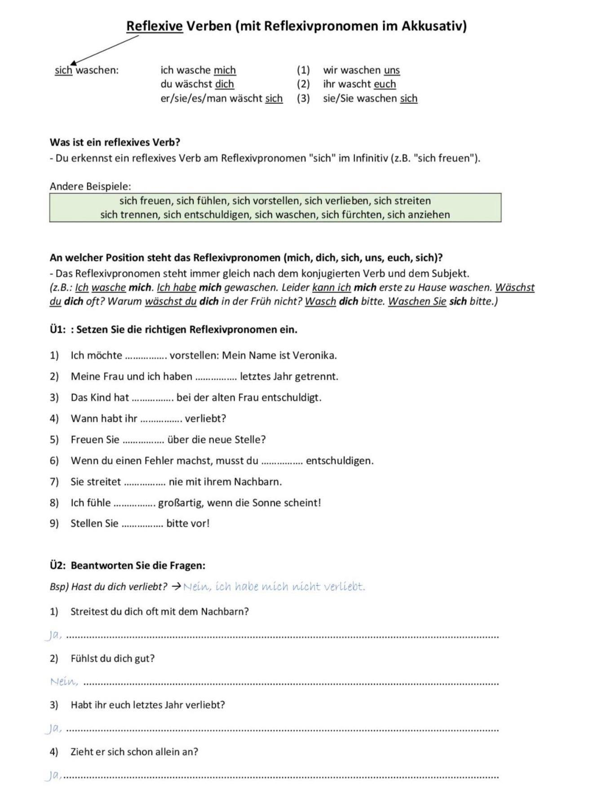
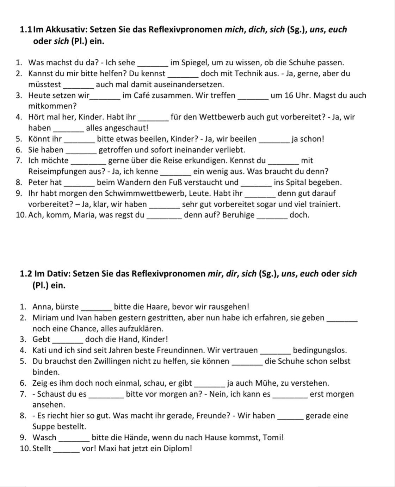
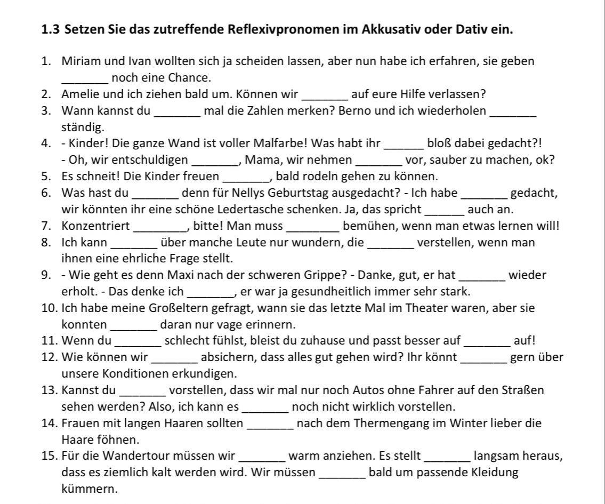

Возвратные глаголы с Dativ и «ложные друзья» возвратности
Разобрали домашку 24-го (упражнение — на странице 24, всё сошлось), и дальше — возвратные глаголы с Dativ: Ich putze mir die Zähne, Er gibt sich viel Mühe, Sie kümmern sich um ihre Kinder. Главное открытие: возвратность в русском и немецком не совпадает — «вспоминать» это sich erinnern, а «учиться» и «смеяться» — вообще без sich. В конце — аудирование: больница с жёлтой линией, билеты на Гарри Поттера и medicine-приём. Домашка — лист на местоимения, видео про хобби + составить диалог и рабочая тетрадь.
1 Перед уроком: новые слова не берём
Полина честно: «слова все не выучила — я их учу, учу, учу», а к разделу с sich «даже не приступила». Даша успокоила: новую лексику пока не берём — впереди прошедшее время, там надо много практики, поэтому грамматику дожимаем сейчас. Слова из разминки:
2 Возвратные с Dativ: «кому? себе»
Повторили таблицу местоимений (она была на занятии 24: mich/dich/sich… и mir/dir/sich…) и пошли по предложениям. Правило выбора то же, что Даша дала в прошлый раз: убираем «-ся» и спрашиваем без него — «чищу кому? себе» → Dativ, «волную кого? себя» → Akkusativ.
• sich Mühe geben = sich bemühen — стараться (дословно «давать себе старание»). Даша: «хорошее слово, запишите».
• sich schämen — по-русски «ей стыдно» (кому), а по-немецки «стыдит себя» (кого? → Akkusativ). Тот же глагол без sich — «пристыжать кого-то»: ich schäme meine Freunde.
• sich kümmern um — заботиться о (дословно «делать себе заботы о»).
Слова раздела
3 Возвратность RU ↔ DE не совпадает
Главная идея занятия: нельзя доверять русскому «-ся». Есть глаголы, у которых в русском возвратности нет, а в немецком есть — и наоборот.
В русском без «-ся», в немецком — с sich
В русском с «-ся», в немецком — обычные глаголы
4 Аудирование: больница, кино, автоответчик
Задание «richtig oder falsch» — как на экзамене. Даша: «говорят быстро, и это нормально — вылавливайте знакомые слова и по ним стройте логику, всё понять всё равно невозможно». Слова, без которых не разобраться:
Фразы из записей (восстановлены по записи на слух)
folgegen… точнее folgen: der Linie folgen — следовать за линией, folgen + Dativ. vor dem Frühstück — до завтрака (vor + Dativ).
Richtig oder falsch? — как разбирали
Сначала ответь сам, потом открывай пояснение.
5 Ошибки занятия
Как было → как надо. Звук — только правильный вариант.
6 Домашка от Даши
Прислана в Telegram вечером 14 ноября. Поля заполняются здесь и сохраняются в браузере. Ответы и образцы — мои, не Даши.
Лист «Reflexive Verben»: вставить местоимения
В листе есть строки в прошедшем времени (haben … getrennt) — это тема следующих уроков, сейчас важно правильно поставить местоимение.
Ответить на вопросы (по образцу из листа)
Образец: Hast du dich verliebt? → Nein, ich habe mich nicht verliebt. Пиши свой ответ, потом сверяйся с моим.
Посмотреть видео и составить диалог
Видео Hallo Deutschschule «Was sind deine Hobbys?» (15 мин) — это предвестник следующей темы (Freizeit und Sport). Задание Даши: составить диалог двух людей — познакомились случайно, первое свидание в кафе, спрашивают, кто что заказывает, и говорят про увлечения и хобби.
Мой вариант диалога (не эталон Даши)
Рабочая тетрадь — страницы 49–53
Всё по возвратным глаголам — закрепление сегодняшнего.
Листы целиком

Сообщение Даши (домашка)
Видео «Hobbys»
Reflexive Verben — таблица
Übung 1 + вопросы
Страницы листа💾 Всё, что ты напечатала, сохраняется автоматически в этом браузере. На другом устройстве не появится.
Видео к уроку
Ещё одна часть домашки: открой ролик, посмотри и сделай задания под ним. Ответы проверяются тут же.
 Видео 1 из 1Deutsch lernen A1, A2 | Was sind deine Hobbys? | WortschatzHallo Deutschschule · 15:05
Видео 1 из 1Deutsch lernen A1, A2 | Was sind deine Hobbys? | WortschatzHallo Deutschschule · 15:05▶ смотреть на YouTube
Видео из домашки Даши (задание: посмотреть и составить диалог про знакомство в кафе и хобби). Четыре коротких диалога: про Lieblingshobby (Kino, tanzen), зиму (Ski, Snowboard), выбор (Schach или рисование, Skateboard/Fahrrad/Motorrad) и пляж (surfen, schwimmen, Buch). Это мостик к следующей теме — Freizeit und Sport.
Задание 1. Верно или нет? (по всем четырём диалогам)
- Sein Lieblingshobby ist tanzen.
- Im Winter geht er sehr gern Ski fahren.
- Er kann Schach spielen.
- Am liebsten fährt er sein Motorrad.
- Am Strand liest er ein Buch, wenn er müde ist.
Задание 2. Впиши пропущенное слово (из диалогов)
- Ich gehe sehr gern .
- Ich kann kein spielen.
- Am liebsten fahre ich mein .
- Ich gehe sehr gern . (am Meer)
Задание 3. Ответь по видео
- Was ist sein Lieblingshobby?
показать ответ
Ins Kino gehen — ходить в кино. - Was macht er im Winter gern?
показать ответ
Ski fahren. Собеседница — Snowboard fahren. - Was macht er am Strand, wenn er müde ist?
показать ответ
Er liest ein Buch (am Strand).
Слова из видео
Все они есть в ЗУБРе; те, что раньше не встречались, — в разделе «Слова из видео».
Учить слова этого урока
Все слова и фразы урока уже собраны в колоду ЗУБРа — с карточками, тестом, диктантом и расписанием повторений. Прогресс общий с остальными уроками.